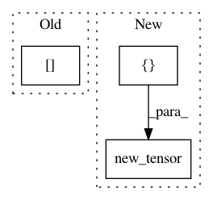

645c7c386e62d2fb1d50f4621c1a52645a13869f,fast_neural_style/neural_style/utils.py,,normalize_batch,#Any#,30
Before Change
mean[:, 0, :, :] = 0.485
mean[:, 1, :, :] = 0.456
mean[:, 2, :, :] = 0.406
std[:, 0, :, :] = 0.229
std[:, 1, :, :] = 0.224
std[:, 2, :, :] = 0.225
batch = torch.div(batch, 255.0)
After Change
def normalize_batch(batch):
// normalize using imagenet mean and std
mean = batch.new_tensor([0.485, 0.456, 0.406]).view(-1, 1, 1)
std = batch.new_tensor([0.229, 0.224, 0.225]).view(-1, 1, 1)
batch = batch.div_(255.0)
return (batch - mean) / std
In pattern: SUPERPATTERN
Frequency: 3
Non-data size: 3
Instances
Project Name: pytorch/examples
Commit Name: 645c7c386e62d2fb1d50f4621c1a52645a13869f
Time: 2018-04-24
Author: soumith@gmail.com
File Name: fast_neural_style/neural_style/utils.py
Class Name:
Method Name: normalize_batch
Project Name: mapillary/inplace_abn
Commit Name: e6bbf54046cf4567e88cb130300b6b78ec88cb27
Time: 2018-11-28
Author: samuel@mapillary.com
File Name: test_imagenet.py
Class Name:
Method Name: validate
Project Name: mariogeiger/se3cnn
Commit Name: fdefea94af715b82cf1c885e53da75dfa26f5b58
Time: 2019-08-14
Author: geiger.mario@gmail.com
File Name: se3cnn/SO3.py
Class Name:
Method Name: spherical_harmonics_xyz